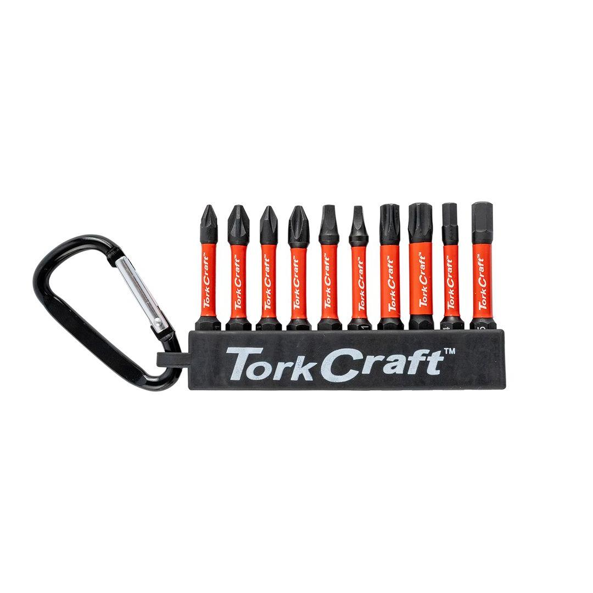

TCIBS010

Bits: Pozi, Phillips, Square, Torx and Hex
Classification: Industrial (Blue)
This 10-Piece Impact Bit Set is an essential addition to any toolbox, engineered specifically for use with high-torque impact drivers.
Each bit measures 50mm in length, providing excellent reach and stability during demanding applications. The set covers a comprehensive range of common fastener types, including Phillips (PH), Pozi-drive (PZ), Square (SQ), Torx, and Hex, ensuring you have the right tip for almost any job.
Constructed from a durable, high-grade steel alloy, these bits are designed to withstand the brutal forces of repeated impacts, offering superior longevity and reducing the risk of cam-out or breakage.
This combination of variety and rugged durability makes the set ideal for professional tradespeople and serious DIYers tackling heavy-duty fastening tasks.
Application: